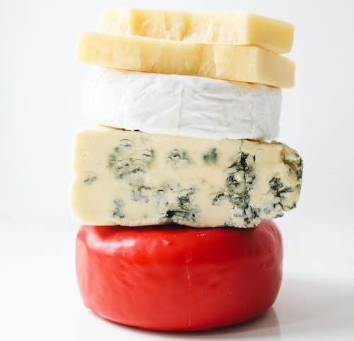

Lesson 21
UNIT 3
Livestock processing technology
BASIC PROCESSING TECHNOLOGIES OF ANIMAL PRODUCTS

Cheese-making and variety of cheeses
Learn the active vocabulary of the Lesson and be ready to use it in your further work:
Cheese-making
виробництво сиру;
variety n
– різноманіття;
to
develop v – розвивати; розробляти;
specialty
n – фірменна страва;
recipe
n – рецепт;
dairy
n – молочарня;
gradually adv
– поступово;
to
state v
– вказувати;
impossible adj
– неможливий;
number n
– кількість;
according
to – згідно за;
interior
mold – внутрішня пліснява;
exterior
mold – зовнішня пліснява;
degree
of hardness – міра / ступінь твердості;
hard
cheese – твердий сир;
to
ripen v
– визрівати;
ripening
/ maturing – визрівання;
ripened – зрілий; стиглий;
unripened
cheese – незрілий сир;
soft
cheese – м’який сир;
semi-soft
cheese - напівтвердий сир;
brine
n – розсіл;
to
immerse v
– занурювати;
to
incorporate v
– додавати;
salted
– солоний;
unsalted
– несолоний;
to
placticize v – пластифікувати;
curd n – згусток, сир;
to
add v – додавати;
herbs
n – трави;
seeds
n – зерна, насіння;
beverage
n – напій;
vegetable dye – барвник рослинного походження.
Read and translate the text. Decide:
A:
Which paragraphs of the text tell about the history of cheese-making?
_____
B: Which paragraphs of the text tell about variety cheeses? _____
CHEESE-MAKING
AND VARIETY CHEESES
Cheese-making
dates from 2000 B.C. It is believed that Arabia is the birthplace of
cheese-making. The Romans developed a large cheese industry, and later became a
specialty of monasteries. Many European abbeys developed secret recipes, and
particular varieties began to be developed in certain regions of
Europe.
Until
1850 most cheese was produced in small dairies. The first cheese-making
factories were merely enlarged forms of the farmhouse dairy. Gradually the
equipment became larger and more mechanized. Since 1945 cheese-making equipment
and methods have changed radically.
Nowadays
it is impossible to state the number of varieties of cheeses (they mention about
700 varieties of cheeses).
It
is interesting to know, that the names of cheeses are usually associated with a
town or region.
However,
cheeses can be classified into major categories, according to the following
characteristics: type of milk used — cow’s milk, sheep’s milk (Roquefort),
or
goat’s milk (Chevre); degree of hardness — very hard (Parmesan); hard without
eyes (Cheddar) or with eyes (Gruyere); semi-soft (Muenster); ripened by interior
mold (Gorgonzola); ripened by exterior mold (Camembert). Soft cheeses are the
un-ripened cottage cheese and ricotta types. They don’t undergo the maturing
process. There are also cheeses that are ripened by surface bacteria
(Limburger); cheeses that are
made by plasticizing the curd in hot water (Caciocavallo); cheeses that are
salted by adding salt to the curd (Chesire), or there is the cheese that is
immersed in brine (St. Paulin).
Herbs,
seeds, alcoholic beverages, and vegetable dyes may also be
incorporated.
GRAMMAR EXERCISES
I. Answer the following questions:
1.
How old is cheese-making?
2.
Did cheese-making become a specialty of monasteries in Europe?
3.
Where was most cheese produced until 1850?
4.
How and when did cheese-making equipment and methods change?
5.
How many types of cheeses are there nowadays?
6.
How can cheeses be classified according to the degree of hardness?
7.
Which cheeses don’t go the maturing (ripening) process?
8. What cheeses are produced in your country?
II. In
the text find the sentences with the passive voice:
to be + past
participle
III. Make questions to the following sentences with the passive voice:
Model:
Until
1850 most cheese was produced in small dairies.
Was
most cheese produced in small dairies until 1850?
Where was most cheese produced until 1850?
1.
The names of cheeses are usually associated with a town or region.
Are
____________________________________________________?
What
are ________________________________________________?
2.
Cheeses can be classified into major categories.
Can
____________________________________________________?
How
can ________________________________________________?
3.
Some cheeses are ripened by surface bacteria (Limburger).
Are
any _________________________________________________?
How
are _________________________________________________?
4.
Some cheeses are made by plasticizing the curd in hot water.
Are
_____________________________________________________?
Are
_____________________________________ in hot or cold water?
5.
Herbs, seeds, and vegetable dyes may also be incorporated.
May
____________________________________________________?
What
may _________________________________ by cheese-making?
IV.
Find in the text the English equivalents for the following names of
cheeses:
Рокфор, шевр, пармезан, чеддер, грюйєр, мюнстер, горгонзола, камембер, касіокавалло, творог, рікотта, лімбургер, чеширський, санпаулін.
V. Find a definition for the following names of cheeses:
VI. Choose the correct answer:
1.
Cheese-making dates from ________ .
a.
2000 B.C. b. 2500 B.C. c. 200 A.D. d. 18th century
2.
It is believed that ________ is the birthplace of cheese-making.
a.
Africa b. America c. Arabia d. Australia
3.
The ________ developed a large cheese industry.
a.
Parisians b. British c. Arabians d. Romans
4.
Since 1945 cheese-making equipment and methods have changed
________.
a.
radically b. slowly c. traditionally d. quickly
5.
It is ________ to state the number of cheeses produced nowadays.
a.
possible b. impossible c. interesting d. unlikely
6.
Roquefort is made of _______ milk.
a.
cow’s b. sheep’s c. reindeer’s d. goat’s
7.
Chevre is made of ________ milk.
a.
cow’s b. sheep’s c. reindeer’s d. goat’s
8.
Cottage cheese and ricotta are soft cheeses, they are ________
types.
a. ripened b. salted c. unsalted d. unripened
VII. Prepare a report or a Microsoft Presentation about any famous or your favourite type of cheese. Use the Internet:
VIII. Read and translate the text:
TYPES
OF CHEESES
1
- Fresh
(No Rind)
Classic
Examples: Ricotta, Mozzarella, Cottage Cheese
No
rind so they look the same inside and out! Typically only a few days old, they
are easy to recognise because they are too young to have developed a rind and
with their high moisture content the texture feels wet and mousse-like, stringy
like authentic mozzarella or, if pickled in salt becomes firm but crumbly like
Feta. They are bright white, mild, lemony or lactic with just a hint of the
potential flavour of the milk. Some are wrapped in chestnut leaves, rolled in
ash or covered in herbs.
2
- Aged
fresh cheese (Wrinkled
White to Grey-Blue Rind)
Classic
Examples: St Maure, Sancerre, Crottin de Chavignol, St Marcellin,
Perail.
These
are “Fresh” cheeses, almost always goats’ milk, that have been allowed to grow a
thin almost transparent rind. As the cheese shrinks the pinky-white rind
wrinkles and a dusting of delicate blue grey mould develops. If allowed to
dry out the wrinkles become crevasses, the blue mould darkens and eventually the
interior becomes almost brittle and the flavour intense and very goaty.
3
- Soft
White Rind (White Fuzzy Rind)
Classic
Examples: Camembert, Brie de Meaux, Chaource, Chevre Log
These
grow a fine white crusty rind of penicillin candidum mould, which helps ripen
the cheese and prevents the soft, voluptuous interior from drying out.
Mild, sweet and buttery with a hint of mushrooms when young, they can
develop a robust savoury aroma like mushroom soup made with beef consommé with
just a hint of sherry on the finish. Some artisan cheeses will develop
reddish-brown ferments or yellow moulds.
4
- Semi-Soft
(Fine to Thick Grey-Brown Rind or Orange & Sticky)
Classic
Examples: Edam, Reblochon, Port Salut, Raclette, St Nectaire
The
curd is lightly pressed to remove whey and create a rubbery, elastic texture.
They attract a variety of grey, white and brown moulds which are regularly
brushed off, gradually building a fine leathery rind. Some like Edam have
a barely formed rind and are generally mild, buttery and sweet. Those with a
thicker, mould-encrusted rind are denser and taste stronger, more
earthy.
5
-
Hard (Crusty, Grey, Often Polished, Waxed Or Oiled)
Classic
Examples: Cheddar, Pecorino, Beaufort, Manchego, Gruyere, Parmesan
Hard
cheese are pressed for hours or even weeks to remove the whey and compact the
curd. Traditional hard British cheeses like Cheddar or Lancashire were
wrapped in cloth while in Europe they tended to be soaked in brine; both were to
seal and protect the cheese from drying out in the curing cellars where they
remain for months or even years. They attract a masterpiece of white,
blue, grey, even pink or yellow moulds but most are brushed off during ripening
resulting in a thick, smooth and polished rind like Parmesan to barely formed
like Cheddar. As they have a low moisture content they take longer to
mature and are typically more complex and stronger in flavour.
6
-
Blue (Gritty, Rough, Sometimes Sticky Rind)
Classic
Examples: Stilton, Gorgonzola, Roquefort, Picos de Europa
Blue
penicillium mould is sprinkled into the vat before the milk has curdled then the
curd is cut, piled into moulds and drained. The blue however needs air to
develop so the cheese is pierced allowing air to penetrate the curd along the
tunnels created and in the gaps between the curds. The spicy taste is due
to the reaction between the curds and the blue mould as they age together.
Blue brie style cheeses with their soft white rind are milder and much
creamier.
7
- Flavour
Added (Various)
Classic
Examples: Gouda with Cumin, Lancashire with Chives, Pecorino with
Truffles
Hard
cheeses like Gouda, White Stilton, Wensleydale or Cheddar to which a variety of
flavours like nuts, fruit or herbs are added. Those made where the
ingredients have been added to the cheese from the beginning are infinitely
better than blended cheeses made by combining a young cheese with various
ingredients in a blender then pressing them into a “shape”.
IX. Answer the following questions:
1.
What characteristics of Fresh cheeses do you know? Name the classic examples of
them.
2.
What characteristics of Aged Fresh cheeses do you know? Name the classic
examples of them.
3.
What characteristics of Soft White Rind cheeses do you know? Name the classic
examples of them.
4.
What characteristics of Semi-Soft cheeses
do you know? Name the classic examples of them.
5.
What characteristics of Hard cheeses do you know? Name the classic examples of
them.
6.
What characteristics of Blue cheeses do you know? Name the classic examples of
them.
7.
What characteristics of Flavour Added cheeses do you know? Name the classic
examples of them.
X. Choose the right sentences in the Past Continuous Passive. Form the sentences from the Past Continuous Passive into The Past Continuous Active:
1.
A.
The tractor was being driving by the engine.
B.
The tractor was being driven by the engine.
C.
The tractor was been driven by the engine.
2.
A.
New pig cages were being made by him.
B.
New pig cages was being made by him.
C.
New pig cages was being maded by him.
3.
A.
A technologist was being talk to by Miss Cooper.
B.
A technologist were being talked to by Miss Cooper.
C.
A technologist was being talked to by Miss Cooper.
4.
A.
Was a new farm being build by the entrepreneur?
B.
Were a new farm being built by the entrepreneur?
C.
Was a new farm being built by the entrepreneur?
5.
A.
Where were you being waited for?
B.
Where you were being waited for?
C.
Where was you being waited for?
6.
A.
Why were not your home tasks not being done by you?
B.
Why were your home tasks not being done by you?
C.
Why your home tasks were not being done by you?
7.
A.
Were the animals being fed by them at that time?
B.
Were the animals been fed by them at that time?
C.
Were the animals being feeding by them at that time?
8.
A.
Your machinery was not being check by the mechanic.
B.
Your machinery was not being checked by the mechanic.
C.
Your machinery were not being checked by the mechanic.
9.
A.
The cereals were be grown by the worker last year.
B.
The cereals was being grown by the worker last year.
C.
The cereals were being grown by the worker last year.
10.
A.
Which cows was being milked by the farmer?
B.
Which cows were being milked by the farmer?
C. Which cows were being been milked by the farmer?